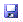

Organisieren von Berichtskomponenten im Berichtsdesigner
[!include[banner](../includes/banner.md)]Nachdem Sie Bausteine und generierte Berichte entworfen haben, ist es hilfreich, diese Objekte zu organisieren, sodass sie vom Benutzer leichter gefunden werden können. Dieser Artikel erläutert, wie vorhandene Berichte, Bausteine und Objekte im Berichts-Designer organisiert werden.
Sie können Ordner, Berichte, Bausteine und andere Objekte im Berichtsdesigner umbenennen, um Ihre Dateien besser zu organisieren. Je nach Art des Objekts, das Sie umbenennen, müssen Sie möglicherweise Zuordnungen für das Objekt aktualisieren.
Umbenennen eines Ordner oder Bausteins im Berichts-Designer
Im Berichts-Designer können Sie Ordner, Berichtsdefinitionen, Zeilendefinitionen, Spaltendefinitionen und Berichtsbaumstruktur-Definitionen umbenennen.
Umbenennen eines Ordners oder Bausteins im Berichts-Designer
- Suchen Sie im Berichts-Designer im Navigationsbereich nach dem umzubenennenden Ordner oder Objekt.
- Klicken Sie mit der rechten Maustaste auf den Ordner oder das Objekt, und klicken Sie dann auf Umbenennen. Das Feld Name im Navigationsbereich ist nun verfügbar.
- Geben Sie einen neuen Namen ein, und drücken Sie die Eingabetaste.
- Wenn der Baustein eine Zeilendefinition, eine Spaltendefinition oder eine Berichtstruktur-Definition ist, müssen Sie weitere Bausteine, die dem Artikel zugeordnet sind, aktualisieren. Klicken Sie mit der rechten Maustaste auf den Baustein, den Sie in Schritt 3 umbenannt haben, wählen Sie Zuordnungen, und wählen Sie dann den Artikel in der Liste, um ihn zu aktualisieren.
- Wiederholen Sie Schritt 4, bis alle zugeordneten Artikel aktualisiert wurden.
Erstellen und Verwalten von Berichtsgruppen
Sie können Berichtsdefinitionen gruppieren, um mehrere Berichte gleichzeitig zu generieren. Zum Erstellen, Ändern, Löschen und Generieren von Berichtsgruppen müssen Sie die Designer- oder Administrator-Rolle haben. Benutzer mit der Generator-Rolle können Berichtsgruppen generieren und anzeigen und die Benutzerberichtsdefinitions-Einstellungen für Berichtsgruppen ändern.
Erstellen einer Berichtsgruppe
- Klicken Sie im Navigationsbereich des Berichts-Designers auf Berichtsgruppen.
- Klicken Sie im Menü Datei auf Neu > Berichtsgruppe, um eine neue Berichtsgruppe im Viewer-Fenster öffnen. Klicken Sie alternativ auf die Schaltläche Berichtsgruppe auf der Symbolleiste.
- Klicken Sie auf die Registerkarte Gruppen-Bericht. Um die Informationen zu den einzelnen Berichtsdefinitionen für die Generierung dieses Berichts zu überschreiben, aktivieren Sie das Kontrollkästchen Überschreiben von Unternehmen, Details und Datumseinstellungen von einzelnen Berichtsdefinitionen. Die Felder Unternehmensname, Detailebene, vorläufige Einstellungen und Datumsinformationen werden automatisch ausgefüllt, aber Sie können Aktualisierungen vornehmen.
- Um mehrere Berichte zu generieren, die die Berichtswährung anzeigen, aktivieren Sie das Kontrollkästchen Alle Berichtswährungen einschließen. Es sind mehrere Ansichten verfügbar, wenn Sie den Bericht anzeigen und auf die Schaltfläche Währung im Web-Viewer klicken.
- Klicken Sie im Feld Berichte in Gruppe auf Hinzufügen, um die Berichte zu wählen, die in die Berichtsgruppe einbezogen werden sollen. Um mehrere Berichte im Dialogfeld Hinzufügen auszuwählen, halten Sie STRG-Taste gedrückt, während Sie Berichte auswählen. Wenn Sie die Berichtsauswahl abgeschlossen haben, klicken Sie auf OK.
- Klicken Sie auf Datei > Speichern, um die neue Berichtsgruppe zu speichern.
Ändern einer Berichtsgruppe
- Klicken Sie im Navigationsbereich des Berichts-Designers auf Berichtsgruppen.
- Doppelklicken Sie auf die zu ändernde Berichtsgruppe.
- Nehmen Sie auf der Registerkarte Berichtsgruppe die gewünschten Änderungen vor.
- Klicken Sie im Menü Datei auf Speichern, um die geänderte Berichtsgruppe zu speichern. Alternativ klicken Sie auf die Schaltläche Speichern  in der Symbolleiste.
[HINWEIS] Wenn Sie geplant haben, Berichte in Zeitabständen zu erstellen, können Sie diese Einstellungen überschreiben und einen Bericht sofort generieren.
Generieren eines Berichtsgruppenberichts
- Klicken Sie im Navigationsbereich des Berichts-Designers auf Berichtsgruppen.
- Öffnen Sie die zu generierende Berichtsgruppe.
- Klicken Sie auf die Schaltläche Bericht generieren , um Berichte zu generieren.
Löschen einer Berichtsgruppe
- Klicken Sie im Navigationsbereich des Berichts-Designers auf Berichtsgruppen.
- Zum Löschen klicken Sie im Navigationsbereich mit der rechten Maustaste auf die Berichtsgruppe, und wählen Sie dann Löschen aus.
- Wenn eine Bestätigungsmeldung angezeigt wird, klicken Sie auf Ja.
Berichtsgruppen-Registerkartensteuerelement
In der folgenden Tabelle werden die Steuerelemente der Registerkarte Berichtsgruppen beschrieben.
| Steuerung | Beschreibung |
|---|---|
| Überschreiben von Unternehmen, Details und Datumseinstellungen von einzelnen Berichtsdefinitionen | Aktivieren Sie dieses Kontrollkästchen, um einzelne Berichtsdefinitionen der Berichte in dieser Berichtsgruppe für die Generierung dieser Berichte zu überschreiben. |
| Unternehmensname | Wählen Sie das Unternehmen für die Berichte aus. |
| Detailebene | Spezifizieren Sie die für den Bericht gewünschte Detailstufe.
|
| Vorläufig | Spezifizieren Sie die für den Bericht gewünschten Aktivitätstypen.
|
| Alle Berichtswährungen einschließen | Alle zusätzlichen Berichtswährungen, die in Ihrem Microsoft Dynamics ERP-System konfiguriert sind, werden hier aufgeführt. Wählen Sie dieses Kontrollkästchen aus, um zusätzliche Berichte in den angegebenen Währungen zu generieren. Sie können dann im Web-Viewer angezeigt werden, indem Sie auf die Schaltfläche Währung klicken und eine Währung auswählen. |
| Nicht mit Berichtsdefinition gespeicherte Datumsinformationen |
|
| Mit Berichtsdefinition gespeicherte Datumsinformationen |
|
| Berichte in Gruppe | Fügen Sie Berichte in der Berichtsgruppe hinzu, entfernen Sie sie aus dieser oder sortieren Sie sie neu.
|